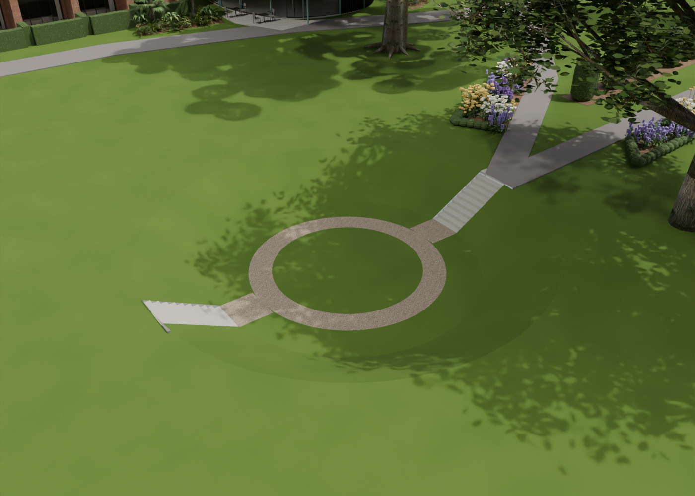
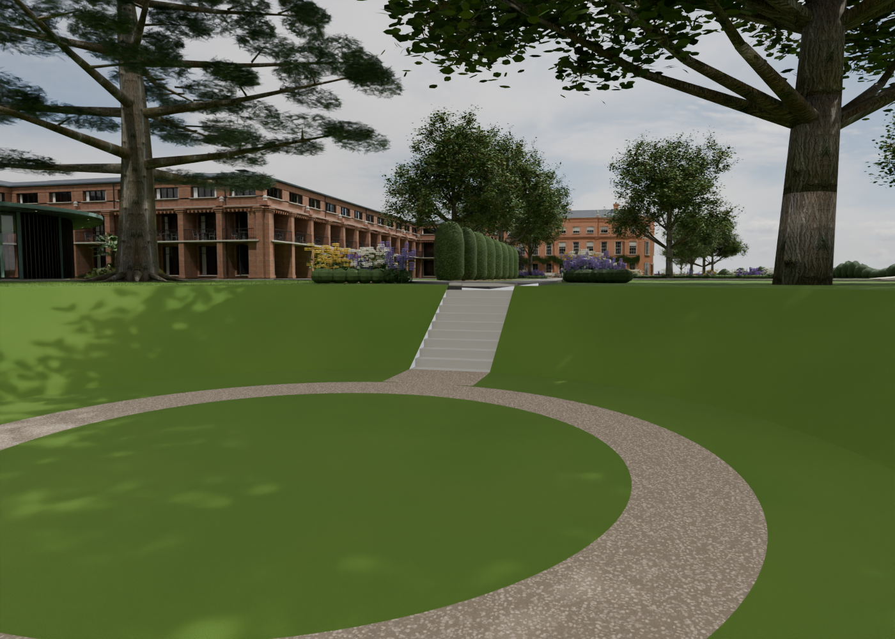
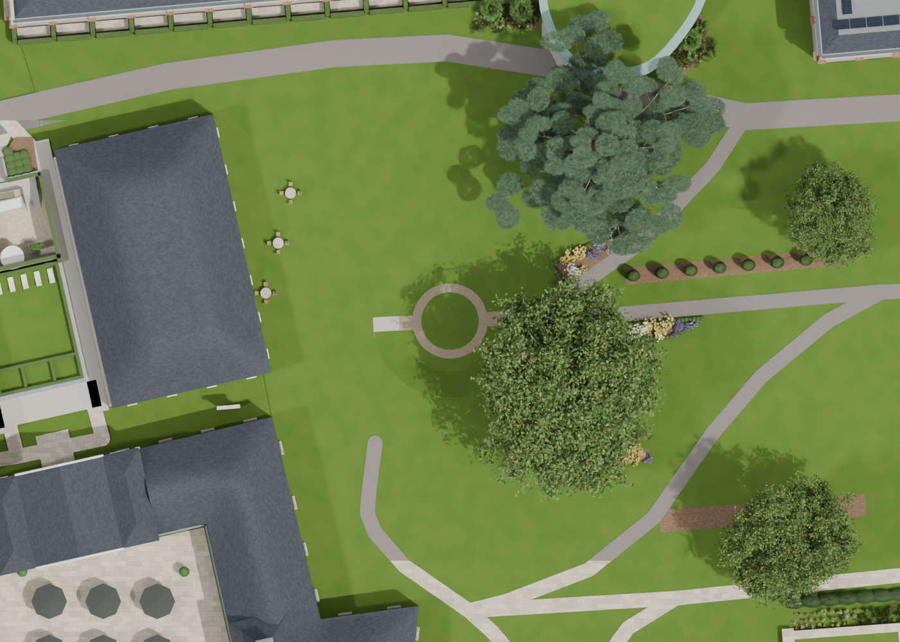

V29 replaces the grey circular paving with the photographed sunken grass garden: central lawn, pale gravel ring, grass banks and stone steps. The small outer paving stub has been removed. The shape was accepted at the review; depth and detailed dimensions remain estimates.
Explore the garden · Ground-level view



Earlier V28 reception and Sequoia gallery — these accepted buildings are retained.